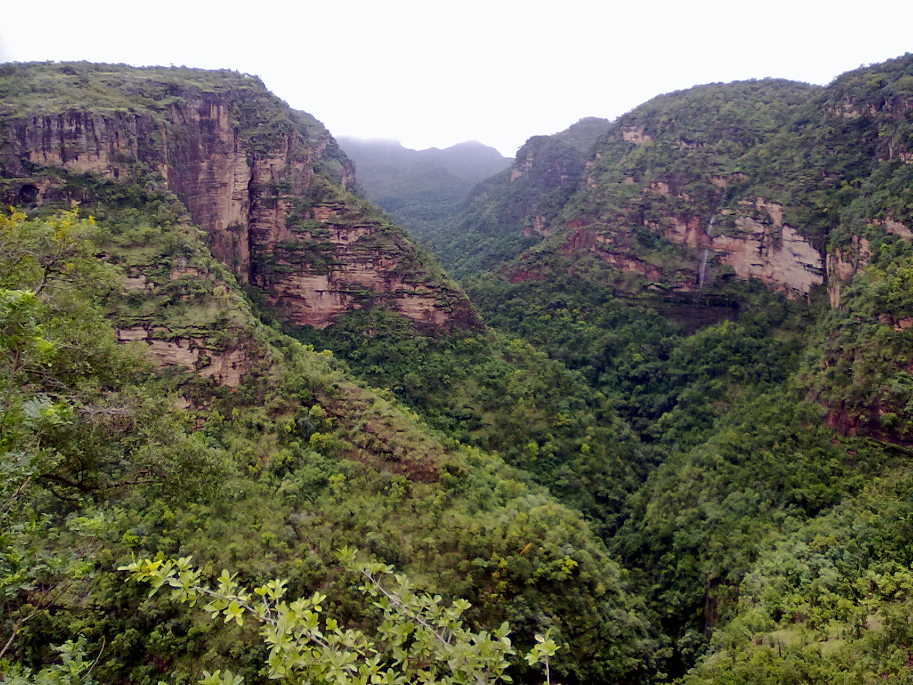
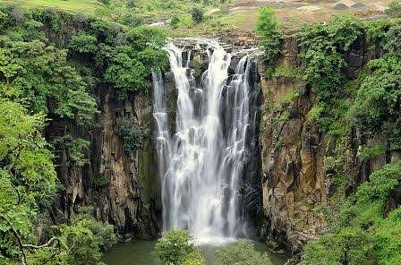

Madhya Pradesh, a large state in central India, retains landmarks from eras throughout Indian history. Begun in the 10th century, its Hindu and Jain temples at Khajuraho are renowned for their carvings of erotic scenes, most prominently Kandariya Mahadeva, a temple with more than 800 sculptures.
Folk Dance
Karma
This indigenous folk dance belongs to the Gond and Oraon tribe of Madhya Pradesh. Considered as the oldest of all tribal dances in the state, it sees performance on the onset of the spring season. Gaily dressed tribal men and women perform this dance, especially around the trees scattered in the village. Musical instruments like thumki, payri, challa and jhumki accompany the various tribal songs.
Jawara
People of the Bundelkhand region perform this dance, to celebrate prosperity. Originally, a peasant dance, Jawara follows the reaping of a good harvest. Men and women, in colorful costumes, dance and revel together, synchronizing their movements to a variety of musical instruments. While dancing, the women also balance baskets, full of jawara, on their head. It is a wonder to notice the poise of the women, while they maintain brisk dance movements of Jawara.
Dress
Lehenga and Choli are the most famous traditional dress among women in Madhya Pradesh. Odhni is a kind of scarf that covers the head and shoulders and is an essential element of traditional dress. Black and Red colors are the most popular colors in clothes.

Men wear the traditional dress Dhoti which also the traditional costume to various regions in India. Another traditional costume is Safa, it is one type of turban. Wearing Safa enriches the appearance of the men. Mirzai and Bandi are other traditional costumes to Men in Madhya Pradesh. They are in a black or white jacket. The Men in Malwa and Bundelkhand give a lot of preference to wear Mirzai and Bandi. The color of the costumes shows the dignity and radiant appearance. The very rural area people wear mostly short Dhotis. The Dhotis are very comfort while working in outside and they are famous as Langot.
Cuisine
Seekh Kebabs are one of the most savoured non-vegetarian dishes of Madhya Pradesh. They are prepared by wrapping minced meat around a skewer (seekh) and then cooking on a coal fire.
Mawa Baati is prepared with mawa dough which is mixed with rich dry fruits. After deep frying the mava dough balls, the dish is well-soaked in the sugar syrup to add sweetness to the dish. Mawa Baati look like bigger gulab jamuns and are served on festive occasions.
Similar to Daal Baati in its taste and texture, Daal Bafla is equally delicious. It is prepared by baking wheat balls, which are later dipped in ghee and consumed with a spicy daal, curry and chutney. It is an important part of the menu for special occasions and social gatherings.


One of the best places to have Biryani in India is Bhopal, M.P. Mutton is the main meat in Bhopali biryani or Biryani Pilaf. Traditionally, it is served with Zarda, which is sweet dish made out of rice, milk, sugar and dry fruits.

It is a breakfast staple and is traditionally served with a curry made out of potato and raita. Palak Puri is prepared with wheat dough mixed with grind spinach leaves and some spices to bring out the best taste.

Tourism
Khajuraho
Khajuraho, a UNESCO World Heritage Site located in Madhya Pradesh, is known around the world for its stunning temples adorned by erotic and sensuous carvings. A small town located in the Bundelkhand region, Khajuraho is a brilliant example of Indian architecture and its culture back in the medieval period. The architecture of these Hindu and Jain temples depict the erotic forms of love, the carvings on the walls display passion in the most sensuous yet aesthetic ways. Built between 950 to 1050 AD the sheer confrontational nature of these carvings shows a stark paradox with the conventional Indian ideals about eroticism, leaving everybody spellbound.
Pachmarhi
Pachmarhi is the only hill station and is the highest point in Madhya Pradesh. Pachmarhi is also often known as "Satpura ki Rani" or the "Queen of the Satpura Range". Situated at an altitude of 1,067 metres, the picturesque town is a part of UNESCO Biosphere Reserve, home to leopards and bison.
Bandhavgarh National Park

Formerly a hunting ground for the Maharajas of Rewa, the Bandhavgarh National Park is world-renowned as a tiger reserve and it is known to have the highest density of Bengal tigers in the world. The frequent sightings of royal tigers make this national park a must-visit for all wildlife enthusiasts. In 2012, around 44-49 tigers were living in the park. There are more than 22 species of mammals and 250 species of avifauna.
Sanchi
Located in Madhya Pradesh, the Buddhist monuments of Sanchi are one of the oldest stone structures in India. Designated a World Heritage site by UNESCO, the Great Stupa was installed in the 3rd century BC by Emperor Ashoka of the Mauryan dynasty. The sculptures and monuments present at the site are a fine example of the development of Buddhist art and architecture in Madhya Pradesh. The stupa sits atop a hill in Sanchi, 46 km from the city of Bhopal. This large hemispherical dome, more than 50 ft high with a diameter of more than 30m was constructed to honour Lord Buddha and houses many important Buddhist relics. It is meant to serve as a sacred burial mound for the distributed remains of Lord Buddha.
Sanchi is known for its ancient Stupas, monasteries, the Ashoka Pillar, Toranas or ornate gateways with intricate carvings and other remnants of the rich Buddhist culture which date back to the 3rd century B. C. It is one of the most important places for Buddhist pilgrimage and pilgrims from around the world visit this place.
Patalpani Waterfall
The Patalpani Waterfall is located in the Mhow Tehsil of Indore district and is a popular picnic spot for the locals of the area. Surrounded by dense forest covers and majestic hills Patalpani plummets from a height of 300 metres. The monsoons swell the falls and may make it risky for close encounters causing accidents. It is best to maintain a cautious distance from the waterfall during the rain.
Mohadi Falls

The breathtaking sight of water falling from a height is always thrilling, and Mohadi Waterfalls are just the perfect spot where you would take your family to visit for a picnic. Easily accessible, the Waterfall is located at a distance of 30 kms from Indore, it is an idyllic picnic spot if you are looking for a break from the monotony of life and want to be with your family.